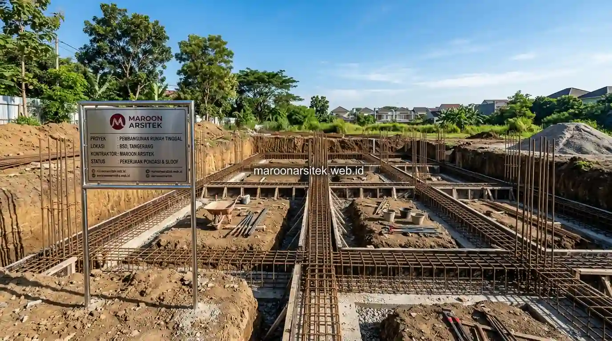

Estimasi biaya bangun rumah yang beredar secara umum di internet sering kali tidak mencerminkan kondisi riil di lapangan, karena setiap lahan dan desain memiliki kebutuhan rekayasa struktur serta selera finishing yang sangat beragam. Menggunakan layanan jasa kontraktor rumah profesional dari Maroon Arsitek membantu Anda menghitung kebutuhan biaya secara terperinci per satuan volume, bukan sekadar perkiraan tebak-tebakan per meter persegi.
Komponen Biaya Pekerjaan Pondasi dan Struktur Bawah
Biaya pekerjaan pondasi dan struktur bawah dipengaruhi langsung oleh jenis tanah, kedalaman lapisan tanah keras, dan jumlah lantai yang direncanakan:
- Kondisi Tanah Lunak vs Tanah Keras: Lahan di wilayah Jakarta yang memiliki daya dukung tanah rendah sering kali memerlukan perkuatan pondasi dalam seperti strauss pile atau bore pile mini, yang mengalokasikan 15%–20% dari total anggaran struktur awal.
- Pondasi Telapak (Footplat) & Sloof Beton: Untuk rumah 1 hingga 2 lantai di lahan stabil, pondasi batu kali dipadukan dengan cakar ayam beton bertulang menjadi opsi paling efisien secara biaya tanpa mengorbankan faktor keamanan gempa.
- Pekerjaan Galian & Urugan Tanah: Memperhitungkan elevasi tanah terhadap jalan raya untuk mencegah risiko genangan air hujan di masa mendatang.
Faktor Kondisi Lahan yang Memengaruhi Biaya Struktur
Pemeriksaan fisik lokasi proyek menjadi tahapan wajib sebelum RAB final diterbitkan:
- Aksesibilitas Mobilisasi Material: Lokasi rumah di dalam gang sempit memerlukan biaya lansir manual material dari truk besar, yang menambah pos ongkos kerja lapangan.
- Pekerjaan Pembongkaran Bangunan Lama: Jika di atas lahan terdapat rumah tua yang harus diratakan, biaya pembongkaran, pembuangan puing, dan perataan tanah dimasukkan dalam pos persiapan awal.

Rincian Biaya Dinding, Atap, dan Struktur Bangunan Atas
Struktur bangunan atas mencakup kolom praktis, balok gantung, plat dak lantai dua, dinding bata, dan konstruksi atap:
- Material Dinding (Bata Ringan / Hebel vs Bata Merah): Bata ringan menjadi standar populer di Jakarta karena bobotnya yang ringan memperingan beban struktur serta proses pemasangannya yang 30% lebih cepat menghemat ongkos tukang.
- Rangka Atap Baja Ringan Zincalume: Tahan rayap, tidak membebani dinding lantai atas, dan memiliki daya tahan hingga puluhan tahun.
- Penutup Atap (Genteng Keramik / Metal Pasir): Memilih penutup atap yang mampu meredam panas terik tropis Jakarta secara optimal.
Penyesuaian Spesifikasi Material dengan Anggaran Tersedia
Maroon Arsitek menyediakan opsi penyesuaian material (*value engineering*) sesuai batas plafon anggaran klien:
- Menentukan area prioritas struktural utama yang tidak boleh dikurangi mutunya (seperti mutu besi beton SNI dan semen berkekuatan tinggi).
- Memilih alternatif material non-struktural yang memiliki tampilan visual serupa namun berharga lebih terjangkau.
Estimasi Biaya Finishing dari Lantai hingga Pengecatan
Tahap finishing adalah pos yang paling menentukan tampilan akhir kemewahan rumah Anda:
- Pekerjaan Lantai: Granit tile homogen berukuran 60x60 cm atau 80x80 cm memberikan nuansa modern mewah dengan harga yang jauh lebih hemat dibanding marmer alam slab utuh.
- Plafon Gypsum & Drop Ceiling: Pemasangan rangka hollow galvanis dengan papan gypsum 9mm dilengkapi variasi indirect lighting LED.
- Kusen & Pintu: Menggunakan kusen aluminium powder coating yang presisi, kedap suara, dan bebas muai susut akibat cuaca lembap.
- Pengecatan Interior & Eksterior: Penggunaan cat anti-bocor bersertifikat weathershield untuk dinding luar dan cat ramah lingkungan antibakteri di ruang dalam.
Pengelolaan Anggaran Finishing agar Tetap Terkendali
Kunci utama agar biaya pembangunan tidak membengkak di akhir proyek:
- Menyetujui merek dan tipe material spesifik sebelum kontrak ditandatangani.
- Membeli material finishing utama secara terencana sebelum tahapan finishing dimulai untuk mengunci harga dari potensi inflasi toko bangunan.
- Menghindari perubahan denah atau letak instalasi air secara mendadak saat fisik bangunan sudah berdiri.